An Android app
Morning Flow
Every morning, a small ceremony.
Morning Flow keeps you company through your morning, from waking up your body to heading out the door.
Free · Android 8.0 or newer · about 17 MB
The routine
The Eight Steps
From bed to door.
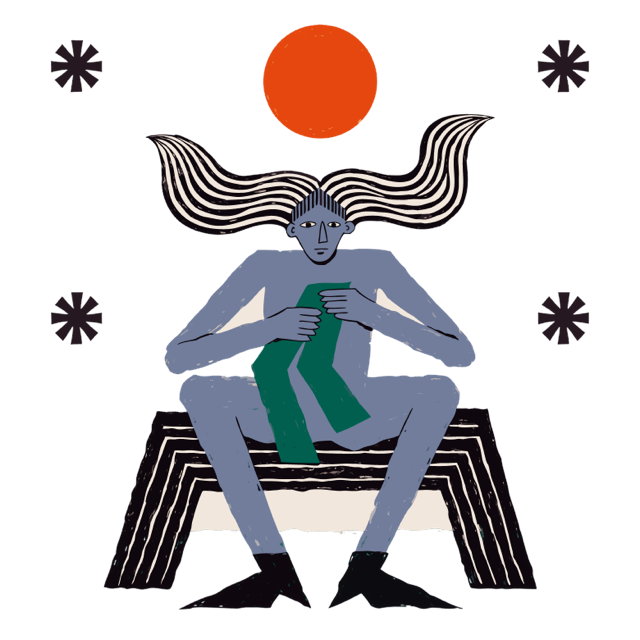
Get Up
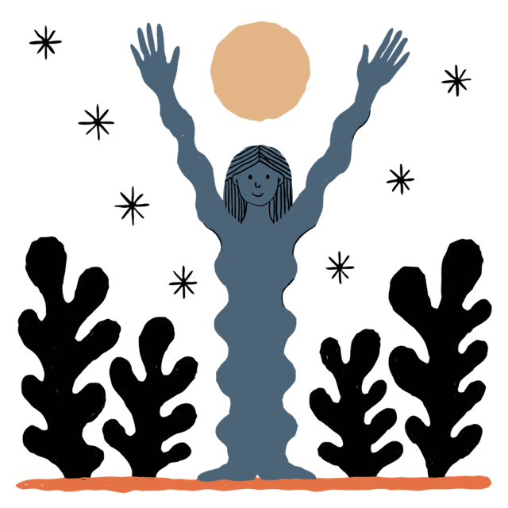
Wake Your Body
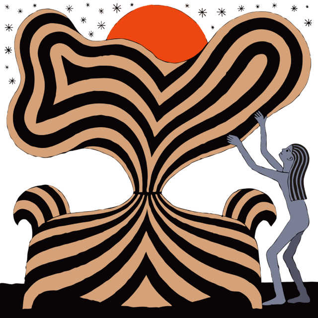
Morning Reset
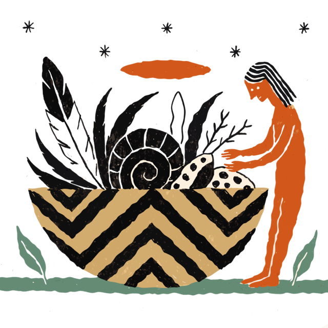
Make Breakfast
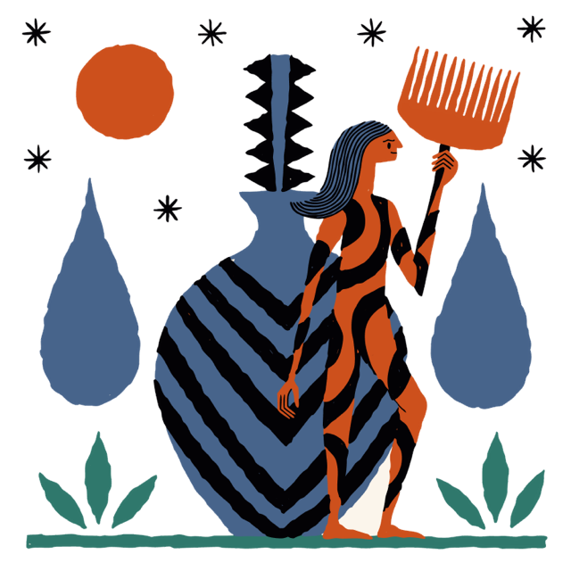
Wash Up
Eat Breakfast
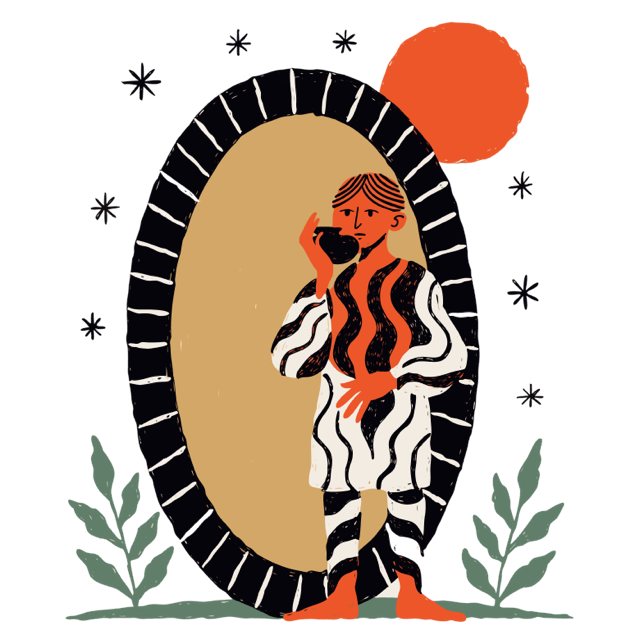
Get Ready
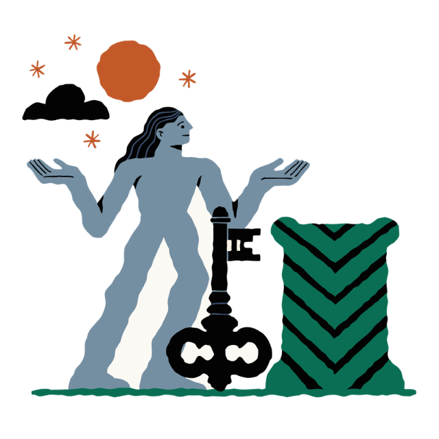
Head Out
In the hand
Made for Sleepy Eyes
Big text, few words, and a voice that tells you what to do, so you can follow along from across the room.
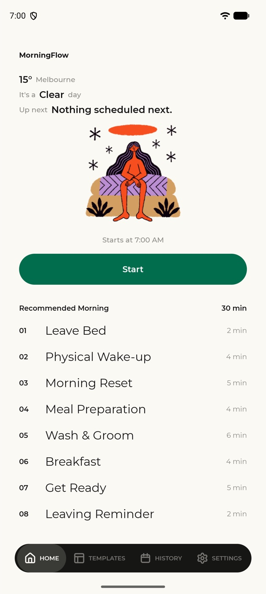
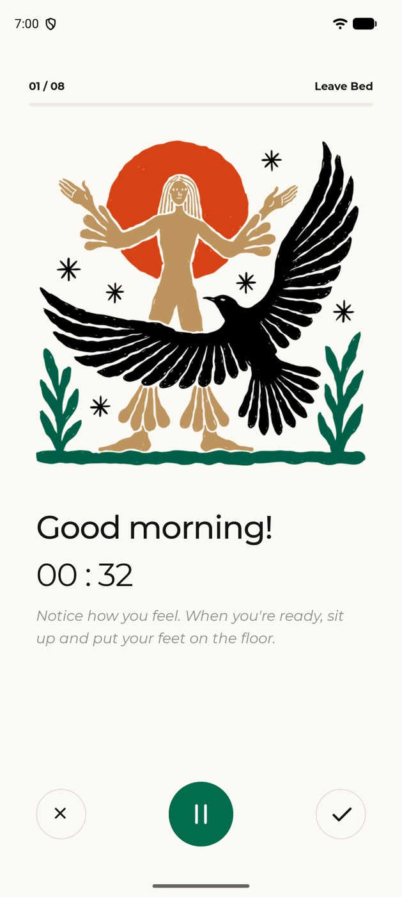
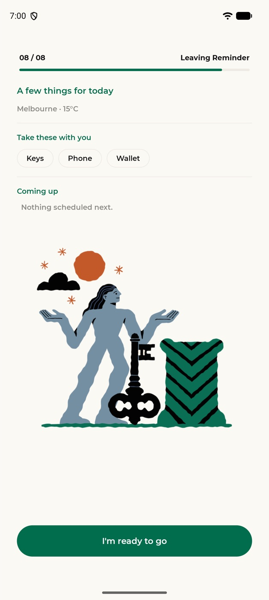
What it does
Six Small Things
Less to think about before you're fully awake.
A Voice to Follow
A recorded voice talks you through each step and finishes before the timer runs out.
Knows You're Up
Pick up your phone around your usual wake-up time, and it asks if you want to start.
Counts for You
Your phone counts your squats and steps, so there's nothing to tap.
Short, Medium, Long
Each step comes in three lengths, for rushed mornings and slow ones.
Before You Leave
See the weather, your next events and your packing list, plus a reminder if you need an umbrella or a jacket.
A Record of Mornings
A calendar marks every morning you finish.
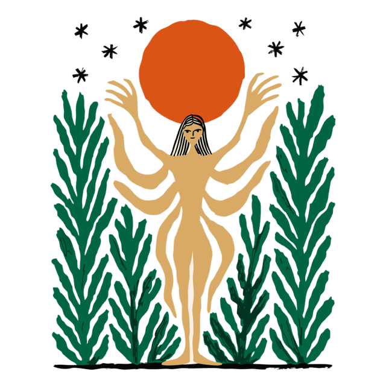
Install
Bring It Home
- 1Open this page on your Android phone and tap Download.
- 2Open the downloaded file. If asked, allow your browser to install apps.
- 3Tap Install, open Morning Flow and allow what it asks for.